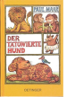

Der tatowierte Hund. ( Ab 8 J.)

Eines Nachmittags gegen halb fünf trifft ein Lowe mitten im Urlaub einen seltsamen Reisenden: einen tatowierten Hund, dessen Haut uber und uber mit bunten Zeichnungen bedeckt ist. "Jedes dieser Bilder bedeutet eine Geschichte", erklart der Hund dem erstaunten Lowen, als dieser endlich mit dem Anschauen fertig ist. Und nachdem der tatowierte Hund sich lange hat bitten lassen und vom neugierigen Lowen ein dickes Leberwurstbrot eingehandelt hat, verwandeln sich die Bilder auf seiner Haut in die ulkigsten Gestalten. So erzahlt der Hund "Wie der Affe Schlevian und der Affe Kukuk dem Nusshandler einen Sack Nusse stahlen" und der Lowe revanchiert sich mit der "Geschichte vom bosen Hansel, der bosen Gretel und der Hexe". Und nach und nach entsteht zwischen den beiden Tieren eine fast schon philosophische Betrachtung uber den Sinn und Unsinn von Worten und Bedeutungen. Paul Maar zeigt sich einmal